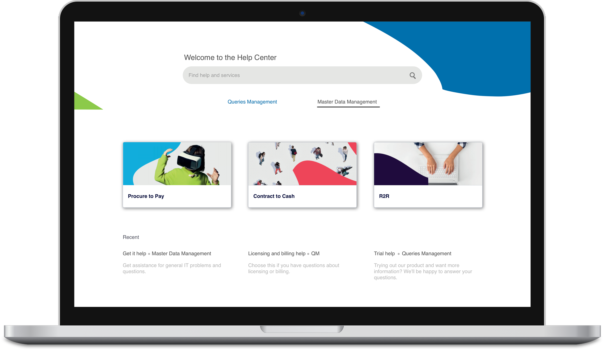
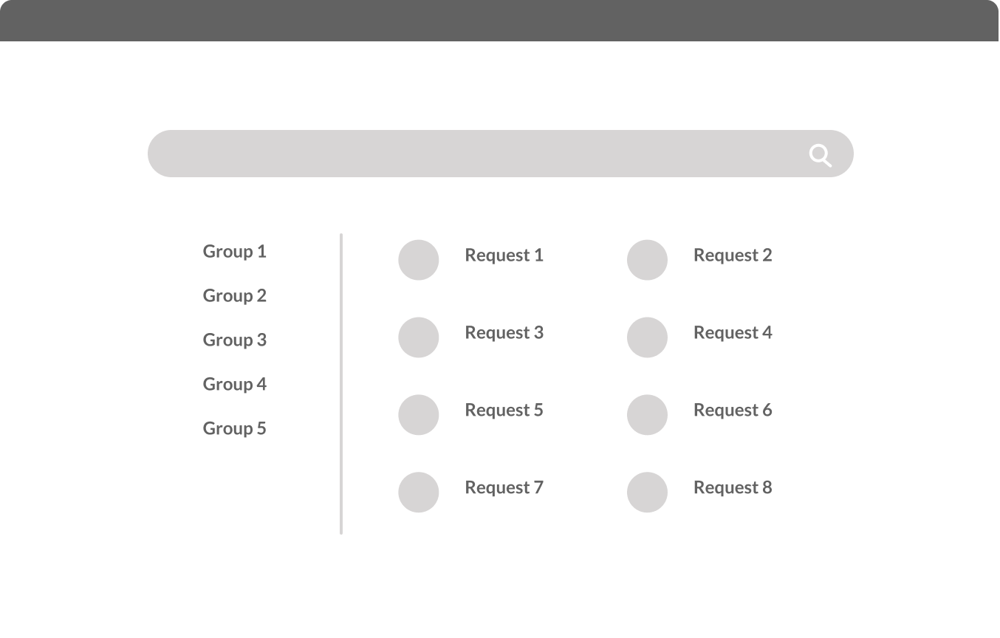
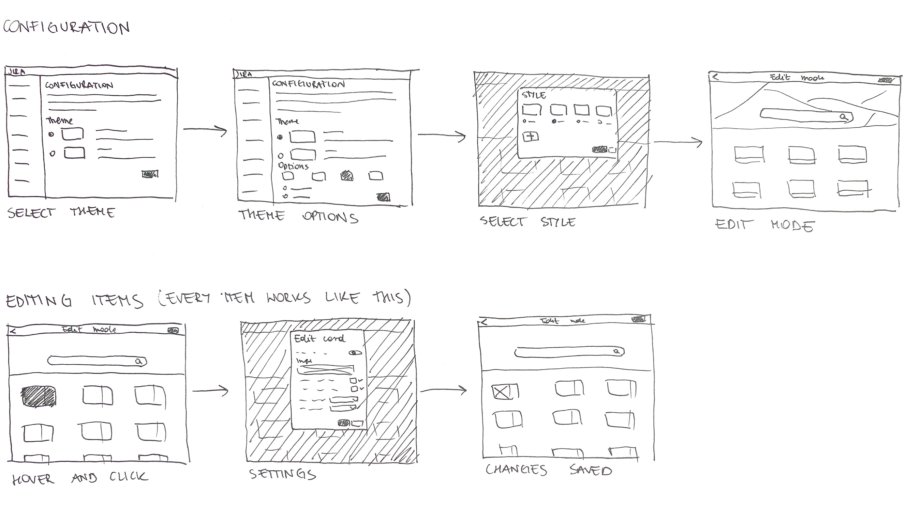
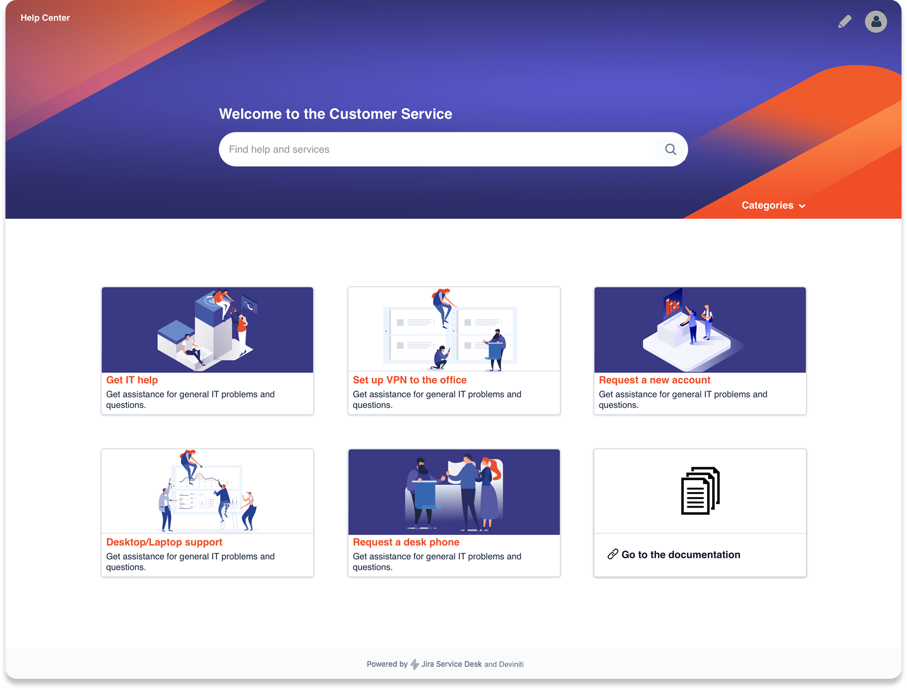
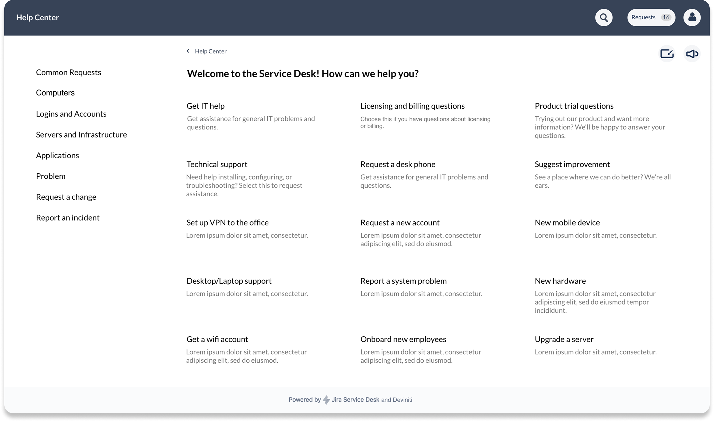
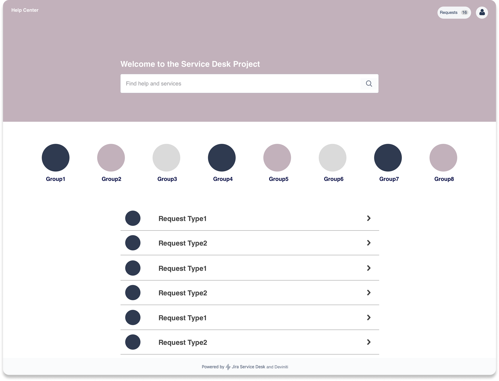
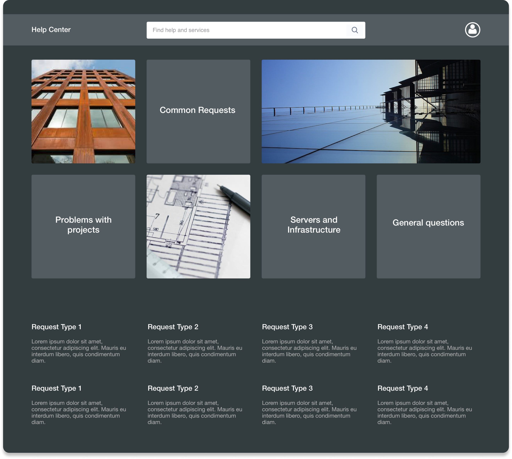

A personalization add-on for Jira Service Management that lets companies fully customize their customer portal to match their brand identity.

Companies using Jira Service Management had no way to customize the look of their customer portal. The out-of-the-box experience was generic and didn't reflect their brand - leading to lower trust from customers and a disconnect between the portal and the rest of the company's digital presence.
The existing Atlassian customization options were very limited: a logo and a single accent color. Larger organizations with strong brand guidelines needed full visual control - custom color schemes, fonts, background imagery, and the ability to create multiple themes for different teams or regions.
I conducted interviews with IT administrators and service desk managers across mid-size and enterprise companies. I also analyzed competitor apps on the Atlassian Marketplace and reviewed customer feedback threads on the Atlassian Community forum to understand what users were asking for and what was missing in existing solutions.
The research covered user needs, technical constraints of the Jira platform, and the mental models of both the admins who configure the portal and the end users who interact with it daily.
The research revealed a clear gap between what Jira natively offered and what organizations actually needed for brand-aligned service portals.
Most companies had established brand guidelines they were required to follow. A generic blue Jira portal felt misaligned and reduced user confidence in the tool.
IT administrators wanted to configure themes quickly without needing developer support. A theme builder had to be powerful yet approachable.
Enterprise users often manage multiple service desks for different departments or brands - they needed the ability to save and switch between theme presets.
Employee and customer satisfaction with the help desk was directly tied to how polished and professional the portal looked - poor design led to more calls instead of self-service.
Two distinct users interact with Theme Extension in fundamentally different ways - one configures, one consumes. The design had to serve both without compromising either.
Responsible for managing Jira and all its apps across the organization. Technically confident but time-constrained - needs to set up and maintain themes with minimal overhead.
An employee or external customer using the service portal to submit requests and track issues. Not aware of the tool behind the portal - just wants a clear, trustworthy experience.
I started with low-fidelity wireframes to map out the two main surfaces: the admin theme builder and the themed customer portal. Early iterations explored how much control to expose to the admin without overwhelming them - the key design challenge was finding the right balance between flexibility and simplicity.

Before moving to high fidelity, I explored different approaches to the color picker, theme preview, and navigation structure through quick hand sketches and low-fi digital explorations. Several concepts were tested with stakeholders before settling on the final direction.

The final design delivered a fully branded customer portal experience powered by a clean, intuitive admin interface. Admins can configure color palettes, upload background images, set typography, and preview the result in real time before publishing.
The theme builder is built around visual presets and a live preview - reducing the configuration time from potentially hours of manual tweaking to a matter of minutes.




Theme Extension launched on the Atlassian Marketplace and gained traction quickly among enterprise customers who needed consistent brand experiences across their Jira portals. The self-service nature of the tool significantly reduced the IT workload associated with portal customization requests.
The clear admin interface and live preview feature were highlighted as the key differentiators in customer reviews - users praised how fast and intuitive the setup process was compared to manual CSS workarounds they had been using before.